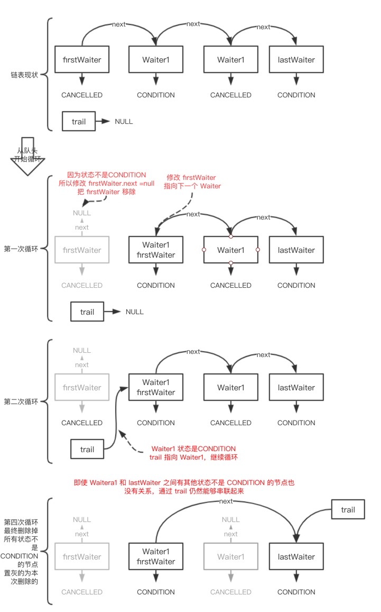

释放锁
释放锁的触发时机就是我们常用的 Lock.unLock () 方法，目的就是让线程释放对资源的访问权 （流程见整体架构图紫色路线）。
释放锁也是分为两类，一类是排它锁的释放，一类是共享锁的释放，我们分别来看下。
释放排它锁 release
排它锁的释放就比较简单了，从队头开始，找它的下一个节点，如果下一个节点是空的，就会从 尾开始，一直找到状态不是取消的节点，然后释放该节点，源码如下：
1 | //unlock的基础方法 |
1 | // 很有意思的方法，当线程释放锁成功后，从 node 开始唤醒同步队列中的节点 |
这个函数并不复杂。一句话概括：用unpark()唤醒等待队列中最前边的那个未放弃线程，这里我们也用s来表示吧。此时，再和acquireQueued()联系起来，s被唤醒后，进入if (p == head && tryAcquire(arg))的判断（即使p!=head也没关系，它会再进入shouldParkAfterFailedAcquire()寻找一个安全点。这里既然s已经是等待队列中最前边的那个未放弃线程了，那么通过shouldParkAfterFailedAcquire()的调整，s也必然会跑到head的next结点，下一次自旋p==head就成立啦），然后s把自己设置成head标杆结点，表示自己已经获取到资源了，acquire()也返回了
释放共享锁 releaseShared
释放共享锁的方法是 releaseShared，主要分成两步：
tryReleaseShared 尝试释放当前共享锁，失败返回 false，成功走 2；
唤醒当前节点的后续阻塞节点，这个方法我们之前看过了，线程在获得共享锁的时候，就 会去唤醒其后面的节点，方法名称为：doReleaseShared。
我们一起来看下 releaseShared 的源码：
1 | // 共享模式下的释放 |
条件队列
最后我们再来细说一下条件队列。在看条件队列的方法之前，我们先得弄明白为什么有了同步队列，还需要条件队列？
简单讲，一些线程在获得锁之后 发现某些条件不满足，进行自我阻塞，此时用的队列就是条件队列。比如，获得锁的多个线程在碰到队列满或者空的时候，可以使用 Condition 来 管理这些线程，让这些线程阻塞等待，然后在合适的时机后，被正常唤醒。
Condition
刚才我们看条件队列 ConditionObject 时，发现其是实现 Condition 接口的，现在我们一起来 看下 Condition 接口，其类注释上是这么写的：
- 当 lock 代替 synchronized 来加锁时，Condition 就可以用来代替 Object 中相应的监控 方法了，比如 Object#wait ()、Object#notify、Object#notifyAll 这些方法；
- 提供了一种线程协作方式：一个线程被暂停执行，直到被其它线程唤醒；
- Condition 实例是绑定在锁上的，通过 Lock#newCondition 方法可以产生该实例；
类注释上甚至还给我们举了一个例子：
假设我们有一个有界边界的队列，支持 put 和 take 方法，需要满足： 1：如果试图往空队列上执行 take，线程将会阻塞，直到队列中有可用的元素为止； 2：如果试图往满的队列上执行 put，线程将会阻塞，直到队列中有空闲的位置为止。
1、2 中线程阻塞都会到条件队列中去阻塞。
take 和 put 两种操作如果依靠一个条件队列，那么每次只能执行一种操作，所以我们可以新建 两个条件队列，这样就可以分别执行操作了， 感兴趣的可以看看 ConditionDemo 这个测试类d除了类注释，Condition 还定义出一些方法，这些方法奠定了条件队列的基础，方法主要有：
1 | void await() throws InterruptedException; |
这个方法的主要作用是：使当前线程一直等待，直到被 signalled 或被打断。
当以下四种情况发生时，条件队列中的线程将被唤醒
- 有线程使用了 signal 方法，正好唤醒了条件队列中的当前线程；
- 有线程使用了 signalAll 方法；
- 其它线程打断了当前线程，并且当前线程支持被打断；
- 被虚假唤醒 (即使没有满足以上 3 个条件，wait 也是可能被偶尔唤醒，虚假唤醒定义可以 参考： https://en.wikipedia.org/wiki/Spurious_wakeup)。
被唤醒时，有一点需要注意的是：线程从条件队列中苏醒时，必须重新获得锁，才能真正被唤 醒，这个我们在说源码的时候，也会强调这个。
await 方法还有带等待超时时间的，如下：
1 | // 返回的 long 值表示剩余的给定等待时间，如果返回的时间小于等于 0 ，说明等待时间过了 // 选择纳秒是为了避免计算剩余等待时间时的截断误差 |
除了等待方法，还是唤醒线程的两个方法，如下：
1 | // 唤醒条件队列中的一个线程，在被唤醒前必须先获得锁 |
接下来我们来看一下条件队列一些比较重要的方法， 以下方法都在 ConditionObject 内部类 中。
入队列等待 await
获得锁的线程，如果在碰到队列满或空的时候，就会阻塞住，这个阻塞就是用条件队列实现的， 这个动作我们叫做入条件队列，方法名称为 await，流程见整体架构图中深绿色箭头流向，我们 一起来看下 await 的源码：
1 | public final void await() throws InterruptedException { |
await 方法有几点需要特别注意：
- ，节点在准备进入条件队列之前，一定会先释放当前持有的锁，不 然自己进去条件队列了，其余的线程都无法获得锁了；
- Node 在条件队列中的命名，源码喜欢用 Waiter 来命名，所以我们在条件队列中看到 Waiter，其实就是 Node。
await 方法中有两个重要方法：addConditionWaiter 和 unlinkCancelledWaiters， 我们一一 看下。
addConditionWaiter
addConditionWaiter 方法主要是把节点放到条件队列中，方法源码如下：
1 | // 增加新的 waiter 到队列中，返回新添加的 waiter |
整 体 过 程 比 较 简 单 ， 就 是 追 加 到 队 列 的 尾 部 ， 其 中 有 个 重 要 方 法 叫 做 unlinkCancelledWaiters，这个方法会删除掉条件队列中状态不是 CONDITION 的所有节点， 我们来看下 unlinkCancelledWaiters 方法的源码，如下：
unlinkCancelledWaiters
1 | // 会检查尾部的 waiter 是不是已经不是CONDITION状态了 |
为了方便大家理解这个方法，画了一个释义图，如下：

单个唤醒 signal
还是以阻塞队列为例，如果B线程生产完元素后 进行自我阻塞，突然队列中的元素被线程 A 消费了，线程 A 就会调用 signal 方法，唤醒之前阻塞的线 程，会从条件队列的头节点开始唤醒（流程见整体架构图中蓝色部分），源码如下：
1 | // 唤醒阻塞在条件队列中的节点 |
我们来看下最关键的方法：transferForSignal。
1 | // 返回 true 表示转移成功， false 失败 |
全部唤醒 signalAll
1 | // 唤醒全部 |

...
...
This is copyright.